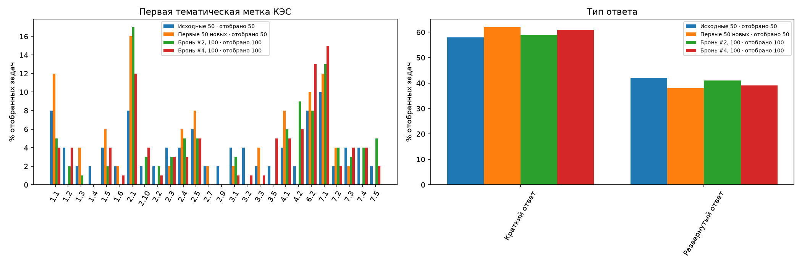
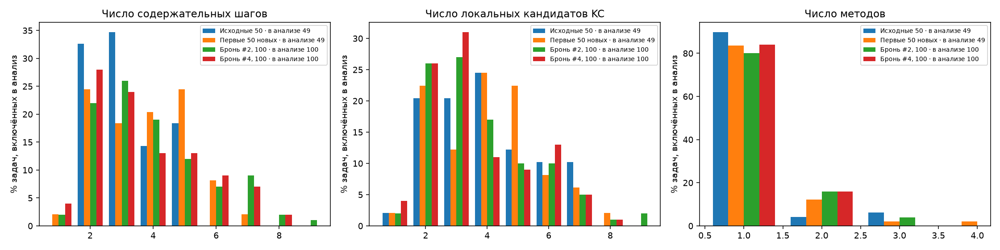
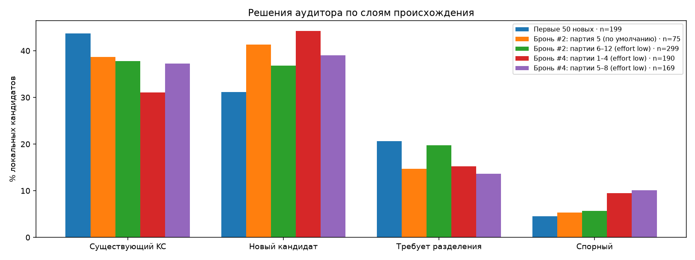
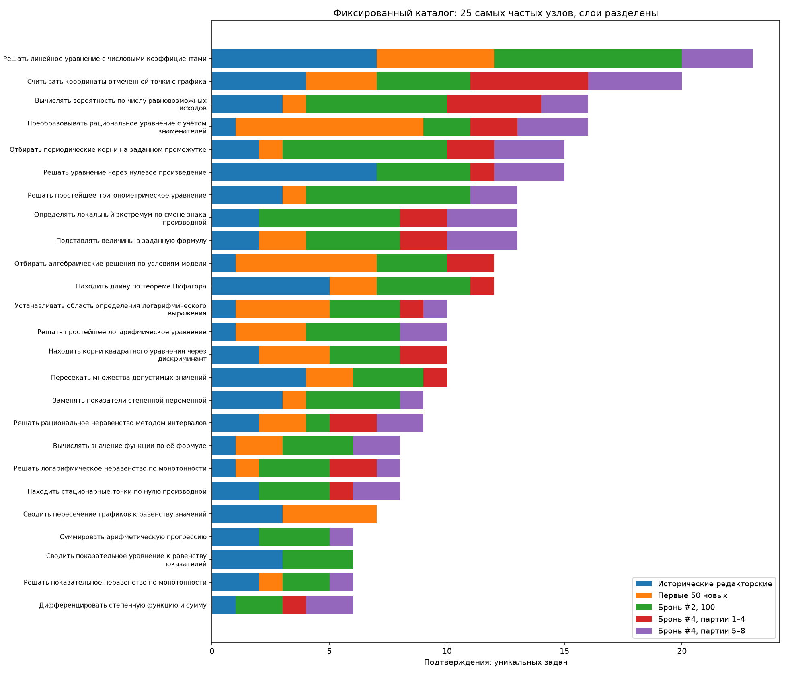
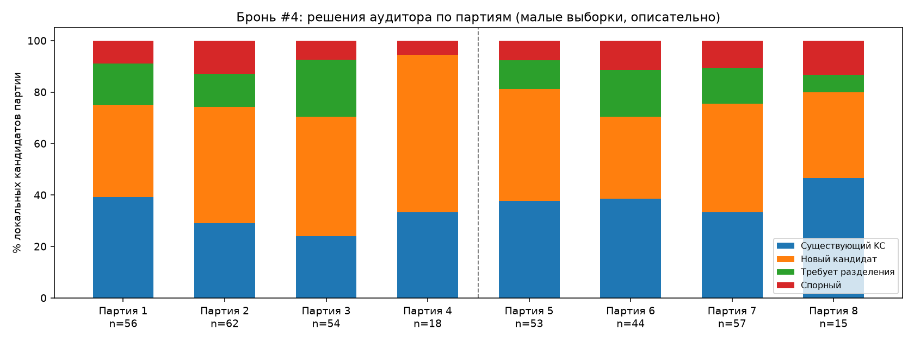

# ФИПИ: накопленная контрольная точка 300 задач Расчёт по сохранённым разборам и аудитам, без новых модельных запросов. Корпус — [EDA-200](../2026-11-09-fipi-checkpoint-200-v1/report.md) и все 100 задач брони #4 Bogdan108 (партии 1–8); первые 50 из них вошли в промежуточный [EDA-250](../2026-11-09-bogdan108-checkpoint-250-v1/report.md). Определения метрик — как в [EDA-100](../../runs/2026-11-02-fipi-extension-150/derived/checkpoint-100-v1/report.md), EDA-200 и EDA-250: узел каталога считается подтверждённым в задаче, если аудитор поставил `match` без блокировки; частоты — число задач, а не упоминаний; единичный узел — подтверждён ровно в одной включённой задаче. Внешнего эталона нет; статус `solved` не является оценкой точности. ## 1. Слои и готовность | Слой | Выбрано | Полных пар | В частотах | Подтверждённых узлов | Единичные / узлы | Несопоставленные кандидаты | |---|---:|---:|---:|---:|---:|---:| | Исходные 50: редакторские связи | 50 | 50 | 49 | 136 | 101/136 | 0/194 | | Первые 50 новых (запуск 2026-11-02): агентный аудит | 50 | 50 | 49 | 48 | 30/48 | 110/197 | | Бронь #2, 100 задач (партии 5–12): агентный аудит | 100 | 100 | 100 | 65 | 34/65 | 232/374 | | Бронь #2, партия 5: Opus, уровень рассуждений по умолчанию | 15 | 15 | 15 | 24 | 19/24 | 46/75 | | Бронь #2, партии 6–12: Opus, effort low | 85 | 85 | 85 | 54 | 29/54 | 186/299 | | Бронь #4, 100 задач (партии 1–8): Opus, effort low | 100 | 100 | 100 | 61 | 35/61 | 237/359 | | Бронь #4, партии 1–4 (50 задач, вошли в EDA-250) | 50 | 50 | 50 | 40 | 27/40 | 131/190 | | Бронь #4, партии 5–8 (50 задач) | 50 | 50 | 50 | 39 | 23/39 | 106/169 | | Все новые 250: агентный аудит | 250 | 250 | 249 | 90 | 25/90 | 579/930 | | Смешанный накопленный корпус 300 | 300 | 300 | 298 | 139 | 46/139 | 579/1124 | Слой «Исходные 50» содержит редакторские связи основного ассистента; остальные слои — независимый агентный аудит. Смешанный корпус объединяет разное происхождение, поэтому его частоты описательные. Слои брони #4 «партии 1–4» и «партии 5–8» являются частями слоя «Бронь #4, 100». ## 2. Что добавилось - Бронь #4 добавила 100 включённых задач. Узлов каталога, подтверждённых в них: 61; из них не подтверждённых в EDA-200: 0 (нет). - Партии 5–8 добавили к EDA-250 50 включённых задач. Подтверждённых в них узлов: 39; из них не подтверждённых в EDA-250: 0 (нет). - Подтверждённых узлов в смешанном корпусе: 139 (EDA-200) → 139 (EDA-250) → 139 (EDA-300); единичных: 55/139 → 49/139 → 46/139. - Кандидаты брони #4, которым аудитор не нашёл узла (`new_candidate`): 150 (партии 1–4 — 84, партии 5–8 — 66). Это локальные предложения отдельных задач, а не число уникальных новых навыков: межзадачной консолидации не было. ## 3. Сравнение слоёв по тем же определениям | Показатель | Бронь #2, партии 6–12 | Бронь #4, партии 1–4 | Бронь #4, партии 5–8 | Бронь #4, 100 | Все новые 250 | |---|---:|---:|---:|---:|---:| | Существующий KC | 113/299 (38%) | 59/190 (31%) | 63/169 (37%) | 122/359 (34%) | 351/932 (38%) | | Новый кандидат | 110/299 (37%) | 84/190 (44%) | 66/169 (39%) | 150/359 (42%) | 353/932 (38%) | | Требует разделения | 59/299 (20%) | 29/190 (15%) | 23/169 (14%) | 52/359 (14%) | 163/932 (17%) | | Спорный | 17/299 (6%) | 18/190 (9%) | 17/169 (10%) | 35/359 (10%) | 65/932 (7%) | | Медиана шагов | 3 | 4 | 3 | 3 | 3 | | Медиана локальных KC | 3 | 3 | 3 | 3 | 3 | | Задачи с неполным сопоставлением | 75/85 (88%) | 49/50 (98%) | 43/50 (86%) | 92/100 (92%) | 227/249 (91%) | Партии 6–12 брони #2 и обе половины брони #4 — `claude-opus-5-5` с `effort: low`, одна методика, одни запросы и один замороженный каталог. Партии 1–5 брони #4 запускались субагентами Claude Code, партии 6–8 — субагентами Cursor (`claude-opus-5-5-low`) с теми же сообщениями `exec-start`; поле `mechanism` в журналах `executions/` у всех партий содержит значение по умолчанию сценария, фактический способ запуска указан в [README брони](../../runs/2026-11-09-fipi-team-bogdan108-next-100/README.md). Доля `match` в партиях 5–8 — 63/169 (37%), в партиях 1–4 — 59/190 (31%), в партиях 6–12 брони #2 — 113/299 (38%). Доля спорных решений в обеих половинах брони #4 (18/190 (9%) и 17/169 (10%)) выше, чем в партиях 6–12 брони #2. Различия нельзя приписать исполнителю: модель и уровень рассуждений совпадают, а партии различаются составом задач (случайные порции очереди из 15 задач), и выборки малы (50 и 85 задач). Внутри брони #4 доли заметно колеблются от партии к партии ([по партиям](figures/05-next-batches.png)). [Состав выборки](figures/01-composition.png), [структура разборов](figures/02-structure.png), [статусы аудита](figures/03-audit-statuses.png). ## 4. Контрольные задачи, исключения и спорные случаи - Контрольные задачи брони #4, сверенные с ожиданиями, записанными до авторских ответов: 24; `match` — 21, `match_after_review` — 3 (E87882 (партия 3), 73BE23 (партия 5), 5E7BDE (партия 7)). Во всех трёх случаях ответ состоит из доказательного пункта а) и числового пункта б); ожидание записано только для б), и строковое сравнение невозможно. Ответ пункта б) совпал с ожиданием: E87882 — «AD:BC = 7:1» при ожидании 7; 73BE23 — «AD = 40» при ожидании 40; 5E7BDE — «KQ = 14» при ожидании 14; доказательства пунктов а) не сравнивались. Сравнение сделано после просмотра ответа и слепой проверкой не является; первые версии сверки сохранены как `checks/batch-NN-math.v0-normalizer.json`. - Приняты после просмотра при статусе автора не `solved`: нет. Статус `solved` у всех 100 авторов брони #4. - Исключены из основных частот смешанного корпуса: - eFF32e: исторический partial или исключение прежней рецензией - C41083: блокирующее замечание аудита В брони #4 исключений нет: блокирующих замечаний аудита и технических ошибок в принятых файлах нет. - В брони #4 партии 1–4: задач с предупреждениями авторов — 11, замечаний аудиторов — 43 (блокирующих 0; `missing_annotation` — 18, `boundary` — 15, `coverage` — 7, `math` — 3); партии 5–8: задач с предупреждениями авторов — 7, замечаний аудиторов — 32 (блокирующих 0; `boundary` — 22, `missing_annotation` — 5, `coverage` — 4, `input` — 1). Спорных решений аудитора (`uncertain`): 35. Чаще всего (`boundary`) замечания касаются границ узлов каталога; в частности, почти совпадающие узлы (`literal_cc7d68a38f29` и `literal_55d5a6d9eb3c` для формул приведения и двойного угла; три узла подсчёта различных корней) не позволяют выбрать одно соответствие. Подробности — в [карточках](index.html) и [таблице кандидатов](tables/candidates.csv). - Неблокирующие замечания вида `math`: FAAE63, 0B2322, 724631 (все в партиях 1–4). Они не отменяют сопоставлений KC, поэтому задачи входят в частоты, но ответы этих задач независимым ожиданием не проверялись: - FAAE63 (прямоугольник и перпендикуляр к диагонали): аудитор отметил неточную формулировку обоснования угла в шаге s2 и оценил итог как верный. - 0B2322 (число точек, где производная положительна, по графику функции): автор отнёс точки вблизи экстремумов к участкам монотонности на глаз и ответил 3; аудитор допускает, что x3 — локальный максимум, и тогда ответ 2. - 724631 (задача с пунктами а–в о десятичной записи чисел): текст шага s2 оборван; аудитор отметил, что граничный случай a = 1, b = c = 0 в выводе s2 требует оговорки, и оценил, что на итоговый ответ это не влияет. - В партиях 5–8 замечаний вида `math` нет, но несколько замечаний видов `boundary` и `coverage` касаются пробелов математического обоснования. Аудиторы оценили, что ответ от них не меняется: - c19c6e (партия 5): в шаге s3 не показана промежуточная запись √2·cos(2x + π/4) = −1 перед делением на √2; результат верен. - B9281F (партия 5): при умножении на k + 1 не отмечено условие k + 1 ≠ 0; на ответ не влияет. - 9595A4 (партия 5): для вывода «трапеция, а не параллелограмм» указано только H ≠ A1, без сравнения C1B1 и A1H; вывод и ответ б) 6 аудитор считает верными. - 4F4F44 (партия 7): вывод о параллелограмме из векторного равенства требует неколлинеарности векторов, в шаге это явно не отмечено. - B19404 (партия 7): не записано, что MH ⊥ BC по теореме о трёх перпендикулярах, и не обосновано, что проекция M — середина OA. - 8755EE (партия 8): в примере пункта в) прослежен только наибольший кусок; что остальные доходят до 1 за те же ходы, не проговорено. - 2F9BDB (партия 8): для наклонной призмы переход от отношения периметров оснований к отношению периметров перпендикулярных сечений явно не показан. - Задачи с чтением координат или формы по рисунку: партии 1–4 — 97C4EA, FEE4C3, 6F2D5E, 6FA927, c1936D, 0B2322; партии 5–8 — D00D6F, 5F9519, 8BF7C8, A2E26B, B537B2, e3e194, ECB413, 62A335. Ответы зависят от качества изображения; авторы отмечали прочтение в `warnings`, аудиторы сверяли его с тем же рисунком. В FEE4C3 автор дополнительно считал пиксели узлов сетки во временной копии рисунка; в A2E26B крутизна графика в двух точках сравнена на глаз; в e3e194 призма на рисунке может быть наклонной, использованная формула верна в обоих случаях. ## 5. Прерывания и повторы - партия 3: 14 аудиторов — прерваны лимитом API до записи ответа и возобновлены тем же агентом нейтральным сообщением после сброса лимита (записи `completion_message` в `executions/`). Ответы записаны однократно и прошли валидатор; влияние прерывания на содержание аудита не оценивалось. - 73BE23 (партия 5, автор): принят третий запуск автора. Первые два свежих агента с тем же сообщением и моделью дали ответы с пустым `kc_ids` у шага вывода пункта а) и не прошли техническую проверку; ответы удалены до аудита и коммита, их SHA-256 записаны в [журнале автора](../../runs/2026-11-09-fipi-team-bogdan108-next-100/executions/author-73BE23.json). В инструкции автора явного требования непустого `kc_ids` у каждого шага нет, поэтому для задач с чисто логическими шагами возможны повторы. - Других повторов и прерываний в журналах нет. Перед стартом агентов партии 8 запуск был отклонён средой (модель временно недоступна); агенты не запускались и файлов не создавали. ## 6. Как читать графики - [Состав](figures/01-composition.png): доли отобранных задач по первой метке КЭС и типу ответа в четырёх крупных слоях. Различия состава между бронями — первое объяснение различий долей статусов аудита. - [Структура](figures/02-structure.png): распределения числа шагов, локальных KC и методов на задачу; это свойство разборов авторов, а не сложности задач. - [Статусы аудита](figures/03-audit-statuses.png): доли решений аудитора по слоям; столбцы одного цвета суммируются в 100% по слою. Знаменатель — число локальных кандидатов, не задач. - [Узлы каталога](figures/04-catalog-evidence.png): 25 самых частых подтверждённых узлов смешанного корпуса; длина полосы — число задач, цвет — слой происхождения. Исторические редакторские связи и агентный аудит получены по-разному. - [Партии брони #4](figures/05-next-batches.png): доли статусов внутри каждой партии; пунктир отделяет партии, вошедшие в EDA-250. Партия 4 и партия 8 содержат по 5 задач, поэтому их доли особенно неустойчивы. ## 7. Какие выводы пока невозможны - Нельзя оценить точность решений: внешнего эталона нет, контрольные ответы проверены выборочно (3 задачи на партию, 24 в брони #4). - Нельзя считать `new_candidate` новыми уникальными навыками и сравнивать их число между слоями как прирост каталога. - Нельзя приписать различия долей статусов аудита между бронями #2 и #4 или между половинами брони #4 исполнителю: модель и уровень рассуждений совпадают, а состав задач различается; смена среды запуска в партиях 6–8 не отделима от состава. - Нельзя считать узлы, не подтверждённые в корпусе, отсутствующими в экзамене: корпус — 300 из 1148 условий банка, отбор по очереди. - Совместная встречаемость и переходы между узлами — описательные; они не доказывают порядок изучения или зависимость навыков. ## 8. Самопроверки - Пересчёт EDA-100 из тех же записей совпал с сохранённой сводкой: True; частоты: True. - Пересчёт частот узлов на 150 задачах совпал с кратким EDA-150: True (148 включённых задач). - Пересчёт EDA-200 совпал с сохранённой сводкой: True; частоты: True. - Записи партий 1–4 совпали с загруженными сборщиком EDA-250: True; пересчёт EDA-250 совпал с сохранённой сводкой: True; частоты: True. ## Материалы - [Карточки всех 100 задач брони #4 и графики](index.html); карточки брони #2 — в [EDA-200](../2026-11-09-fipi-checkpoint-200-v1/index.html); первых 50 новых — в [EDA-100](../../runs/2026-11-02-fipi-extension-150/derived/checkpoint-100-v1/index.html); разборы исходных 50 — в [EDA-50](../../runs/2026-10-31-fipi-50x1/derived/index.html). - Таблицы: [задачи](tables/tasks.csv), [кандидаты](tables/candidates.csv), [частоты](tables/frequencies.csv), [совместная встречаемость](tables/cooccurrence.csv), [переходы](tables/transitions.csv), [состав](tables/composition.csv), [статусы аудита](tables/audit_statuses.csv), [расшифровка КЭС](tables/kes-codebook.csv). - Исполненный ноутбук пересчёта: [review.ipynb](review.ipynb). Входы и хеши: [provenance.json](provenance.json), партии: [batches.json](batches.json). Первая метка КЭС — первая тематическая метка в записи банка, не обязательно главная тема задачи. Метки КЭС и шаблоны — описательные характеристики, не подтверждение одинакового метода.





Исходные 50: EDA-50. Первые 50 новых: EDA-100. Бронь #2, 100 задач: EDA-200.